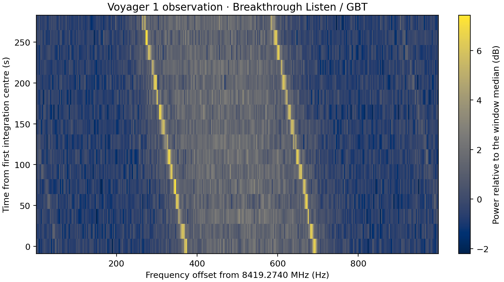

Research reference
SHA-256, LF-normalised text
3e153029fa6038c61e72ce7e159df3c20c7ff5bc8e48b3f6c6c5f234b7128d79Browse 2 versioned evidence files. Table previews simply display stored rows. Consult the project report for the source, processing steps, and inference assumptions.

3e153029fa6038c61e72ce7e159df3c20c7ff5bc8e48b3f6c6c5f234b7128d7905a26fb542253f57661a94d1a593eb6c48945545e43cbc0754e413faf0de64b8SHA-256 values verify the stored files. They do not independently validate the scientific analysis. Rebuild this page with python scripts/evidence_catalog.py followed by python scripts/render_evidence_page.py.